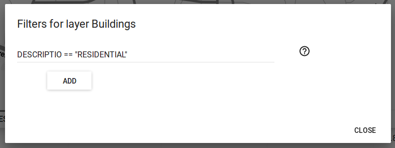

Controls¶
In this page, you can find the description of all the controls that can be added to a web app created by the Web App Builder plugin and how to configure them.
About panel¶
Adds a button which toggles a translucent text panel over the map, usually for describing the app.
About panel example
The following properties can be configured for this control:
| Option | Description |
|---|---|
| content | The content of the panel. Accepts HTML formatted text. Click Edit to open a text editor. |
Add layer¶
Adds a menu entry named upload that can be used by the web app user to add a layer to the map. Only vector layers can be added. Supported formats for layers are GeoJSON, GPX and KML.
About panel configuration
There are no configurable properties for this control.
Attributes table¶
Adds a menu entry named table with the ability to display a table containing the attributes of the features in a given layer. Features can be selected/deselected clicking on the table rows. Multiple selection is available using the shift or ctrl keys. Selected features of layer are shown in a different color in the map view.
Attributes table
The attributes table control came with several tools:
- Layer combo box allows to choose what layer to list the attributes.
- Zoom button will zoom the map view to the selected features.
- Clear will deselect any selected features.
- Move button will move selected features attributes to the top of the table.
- Filter field allows to filter the table using an expression, using the notation accepted by the Filtrex library.
- The Show only selected features checkbox will hide from the table unselected features.
The following properties can be configured for this control:
| Option | Description |
|---|---|
| Zoom level when zooming to a point feature | If a single point feature is selected in the attributes table in the web app, and the Zoom to selected button is clicked, the map zoom will be set to this zoom level |
Attribution¶
Adds an attribution note on the bottom right of the map.
Attribution
There are no configurable properties for this control.
Bookmarks¶
Adds the ability to create and retrieve spatial bookmarks. A spatial bookmark consists of a name, an extent and a description.
The bookmarks are defined in the Bookmarks tab. There are two options for adding bookmarks:
Using QGIS bookmarks. Click Add from QGIS bookmarks and in the dialog that will appear, select the bookmarks to use from the ones currently stored in the QGIS database. Since those bookmarks do not contain a description, but just name and extent, you should define the description manually, typing it in the Description box for each bookmark. Description accepts HTML formatted text.
Bookmarks definition
Using a vector layer. A new bookmark will be added for each feature in the layer, using the bounding box of the feature geometry as the bookmark extent. The name and description of each bookmark will be taken from two attributes in the layer. Nevertheless, description can be edited afterward.
Add Bookmarks from layer dialog
The Configuration tab controls how the bookmarks will be displayed. If the Show as story panel box is not checked, bookmarks will be shown as menu entries in the navigation bar, under a Bookmarks menu.
Bookmarks menu example
Otherwise, if the Show as story panel box is checked, a narrative map will be created, and a panel to browse across bookmarks will be added to the web app.
Story panel
In story panel mode, several options are enabled in the configuration tab:
- Animation type: Can choose between Pan and Go to.
- Move automatically each X seconds: will cycle the bookmarks automatically in the web app.
- Show indicators adds small dots to the panel to serve as reference for the relative position of each bookmark.
- Intro title and Intro description allows adding a first panel without spatial bookmark.
Charts¶
This control allows the creation and display of charts based on the selected features of a layer.
The following properties can be configured for this control:
| Option | Description |
|---|---|
| Chart name | The title of the chart. |
| Display mode | Defines how the feature attributes will be used to create the chart. The following options are available:
|
| Layer | The layer from which to choose features. |
| Layer field | The layer to use for the chart. |
| Category field | The attribute to use for the chart. |
| Add/Modify | After all the other fields have been populated, this button will add the chart to the defined charts list on the right side of the dialog. |
| Remove | Will remove selected chart from the defined charts list. |
Chart Tool configuration Dialog
Note
Since only selected features are used in graph, to use this control, you need to add the Selection control to the web app as well.
Edit¶
The edit control allows users to add new layers and edit them by adding or modifying their features.
It adds an Edit entry in the web app menu, which opens the edit panel.
Edit panel
The edit panel includes several tools:
New layer: Will allow the creation of a new layer using through the Create empty layer dialog.
Create empty layer dialog
Layer combo box: Allows the user to choose which layer to edit.
Enable edit mode / Disable edit mode: Toggle edit mode for the current selected layer.
There are no configurable properties for this control.
Export as image¶
Adds an option to export the current map view to an image file.
Export as image menu
There are no configurable properties for this control.
Full screen¶
Adds a button to the web app to toggle full-screen mode.

Full-screen button
There are no configurable properties for this control.
Geocoding¶
Adds geocoding functionality to locate geographic places by name.

Geocoding tool
There are no configurable properties for this control.
Geolocation¶
Enable geolocation and shows the user current position on the map.
There are no configurable properties for this control.
Help¶
Adds a link on the menubar to a help page.
There are no configurable properties for this control.
Home button¶
Adds a home button to the web app so it returns to the initial map extent.
Home button
There are no configurable properties for this control.
Layers list¶
Add a button that will open the list of layers in the map.
Layers list example
The following properties can be configured for this control:
| Option | Description |
|---|---|
| allowFiltering | Allows the user to set filters for conditional rendering. A filter button is added to each vector layer entry in the layers list, which opens the following dialog:

Layer filters example Layer filters are added as filter expressions, using the notation accepted by the Filtrex library. |
| allowReordering | Allows the user to change the rendering order of layers. |
| showDownload | Show a Download button, so the user can download the layer (vector layers only). |
| showOpacity | Show an opacity slider for each layer. |
| downloadFormat | Choose the format to use for downloading vector layers. Only used if showDownload is enabled. |
| showZoomTo | Show Zoom To button, so the user can adjust the extent of the map based on the extent of an individual layer. |
| expandOnHover | Automatically open the layer list when the mouse hovers over the control’s button. |
| tipLabel | The tooltip to show when the mouse hovers over the layers list. Default is Layers. |
Legend¶
Adds a legend explaining the symbology used in the web app layers.
Legend
A legend entry will be added for all vector and WMS/WFS layers. Raster layers will not have an entry in the legend.
There are no configurable properties for this control.
Links¶
Adds links to external sites to the navigation bar. Each link is defined with a name (shown in the navigation bar) and a URL.
Links control example
The following properties can be configured for this control:
| Option | Description |
|---|---|
| Add link | Adds a new link |
| Remove link | Removes a link from the list |
Links configuration dialog
Loading panel¶
Displays a loading indicator while remote layers are being retrieved.
Loading indicator
There are no configurable properties for this control.
Measure¶
Adds menu entry with area and length measure tools to the web app.
Measure Tools menu
Measure tools example
There are no configurable properties for this control.
Mouse Position¶
Adds a control that displays the current coordinates of the mouse as it moves over the web app map.
Mouse Position
The following properties can be configured for this control:
| Option | Description |
|---|---|
| projection | The CRS to use when determining the units. Default is EPSG:4326. Click the Edit link to choose another CRS. |
| undefinedHTML | The text to show when the coordinate cannot be computed. Default is or a blank. |
| coordinateFormat | OpenLayers string format. Default is ol.coordinate.createStringXY(4). See Open layers API for more details. |
North arrow¶
Add an arrow that indicates the north direction.
North arrow
There are no configurable properties for this control.
Overview map¶
Adds an additional map that shows a larger overview of the extent of the area covered by the app current map view.

Overview map
The following properties can be configured for this control:
| Option | Description |
|---|---|
| Base layer | Allows to choose a base map to the overview map. The user can choose between Use main map base layer or any of the base layers available in the Other Layers tab. |
| Collapsed | If checked, the overview map will not be shown when the app is launched. Default is checked. |
Print¶
Adds printing capabilities to the web app.
Print menu example
Printing layouts are designed using the QGIS Print Composer. The Web App Builder will take the existing print compositions from the current project, and make them available to users of the web app. The web app will generate maps in PDF format using the layout designs created in QGIS, and allowing the user to configure certain parameters, such as the extent of the map of the content of text labels.
Most elements are supported, including legend, arrow, shape, label and scalebar. If any of the print compositions in the current project contains an element that it is not supported (such as, for instance, an attributes table), a warning will be shown before the web app is created.
Query¶
Adds query tools to perform selections in layers. Queries are expressed using the notation accepted by the Filtrex library.
Query tool
The Query tools include the following options:
- Layer: Layer to select from.
- Filter: Where the user should put an valid expression.
- New Selection: Will create a new selection a clear any previous selection on the layer.
- Add Selection: Will add new features to already selected features. Works as an OR operator.
- Refine Selection Will only keep features that meet both previous selection and the new expression. Works as an AND operator.
There are no configurable properties for this control.
Refresh¶
This component has no visual element. Instead, it makes possible to define the refresh interval for each available WMS or WFS layers.
To configure the layers to refresh, right-click on the component button and select “Configure...”. You will see a dialog similar to the one below:
Refresh layers configuration example
The dialog will show a list of all the WMS or WFS layers that are currently in your project. If you want any of them to be refreshed, select it by checking the corresponding check box, and enter the refresh interval in milliseconds.
Scale bar¶
Add a scale bar to the bottom left of the map window.

Scale bar
The following properties can be configured for this control:
| Option | Description |
|---|---|
| minWidth | Minimum width, in pixels, of the scale bar. Default is 64. |
| units | The units to be used in the scale bar. The available options are metric, degrees, imperial, nautical, and us. Default is metric. |
Selection¶
Adds the ability to select features on the map in a few different ways. Two buttons are added to the web app: one to enable the selection mode and one to return to navigation mode.
Selection options in the app
Timeline¶
Adds a slider to the map that can be used to select a given date, and modifies the visibility of layers and features depending on their timestamp and the current time as set in the QGIS Layers Tab (see Layer time info option in the Vector layers section for more details).
Timeline slider
Clicking on the play button will cause the slider to advance automatically. The behaviour of the auto-play mode can be modified using the available options for this control:
- interval. The time, in milliseconds, to wait in each position of the slider. Positions are defined by dividing the slider range by the number of intervals defined in the numIntervals parameter.
- autoPlayFromStartup. Determines if the slider should automatically start when the web app opens.
- numInterval. The number of intervals into which the full range of the slider is divided.
WFS-T¶
An edit component is added that allows modifying WFS-T layers
There are no configurable properties for this control.
Zoom¶
Add buttons to zoom the map in and out.
Zoom buttons
The following properties can be configured for this control:
| Option | Description |
|---|---|
| zoomOutTipLabel | The text to display when hovering over the Zoom Out button. Default is Zoom out. |
| zoomInTipLabel | The text to display when hovering over the Zoom In button. Default is Zoom in. |
| delta | Default is 1.2. |
| duration | Length of time (in milliseconds) it takes to perform a zoom change. Default is 250. |
| zoomInLabel | The text to display on the Zoom In button. Default is +. |
| zoomOutLabel | The text to display on the Zoom Out button. Default is -. |
Zoom slider¶
Adds a slider bar to control the zoom level.
Zoom slider control
There are no configurable properties for this control.
Table Of Contents
- Controls
- About panel
- Add layer
- Attributes table
- Attribution
- Bookmarks
- Charts
- Edit
- Export as image
- Full screen
- Geocoding
- Geolocation
- Help
- Home button
- Layers list
- Legend
- Links
- Loading panel
- Measure
- Mouse Position
- North arrow
- Overview map
- Query
- Refresh
- Scale bar
- Selection
- Timeline
- 3D View
- WFS-T
- Zoom
- Zoom slider
This Page
About Boundless
Boundless provides commercial open source software for internet mapping and geospatial application development. We are dedicated to the growth and support of open source software.
License
This work is licensed under a Creative Commons Attribution-Share Alike 3.0 United States License. Feel free to use this material, but we ask that you please retain the Boundless branding, logos and style.